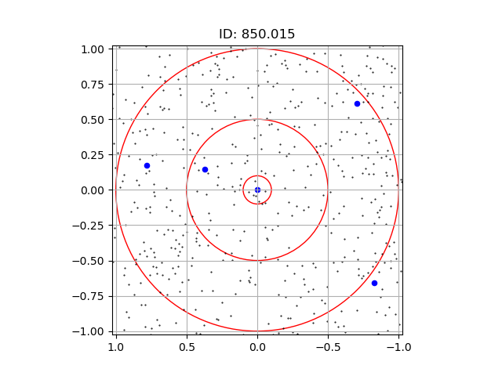
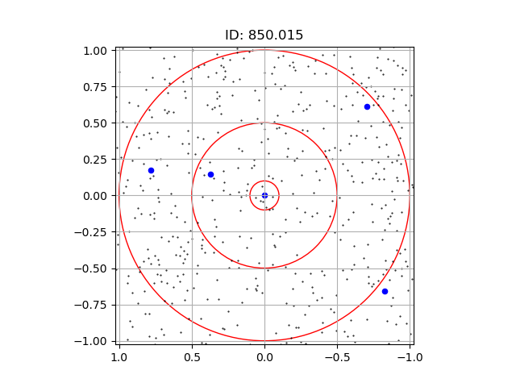

Apéndice A: Mapas de SMGs con radios en distancias angulares
Campo 250" x 250". En coordenadas astronómicas RA, DEC. Los puntos negros representan galaxias ópticas, los puntos azules SMGs y los círculos concéntricos en el origen tienen radios 30", 60", 90", 120". El título para cada gráfico es el ID de S2CLS de la SMG central.
Apéndice B: Mapas de SMGs con radios de distancia física comóvil
Campo 2 Mpc x 2 Mpc. En coordenadas astronómicas RA, DEC. Los puntos negros representan galaxias ópticas, los puntos azules SMGs y los círculos concéntricos en el origen tienen radios 100 kpc, 500 kpc, 1 Mpc. El título para cada gráfico es el ID de S2CLS de la SMG central.


 
